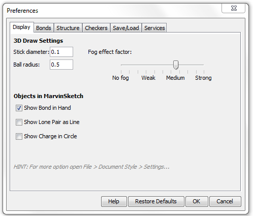

MarvinSketch : Display MS

3D Draw Settings
- Stick diameter is the width of bonds in stick mode in Angstroms.
- Ball radius is the size of atom spheres in Ball draw type, measured in Angstroms.
Objects in MarvinSketch
- Show Bond in Hand when checked, bond types are shown under the mouse cursor like template structures.
- Show Lone Pair as Line when checked, lone pairs on the canvas are shown as lines.
- Show Charge in Circle when checked, a circle is displayed around the charge.
- Fog effect factor: manual setting of the fading strength. No fog: all regions of the structure is displayed with the same line strength and color. Strong effect: the fading is at its maximum (molecule is only slightly visible at the far end).